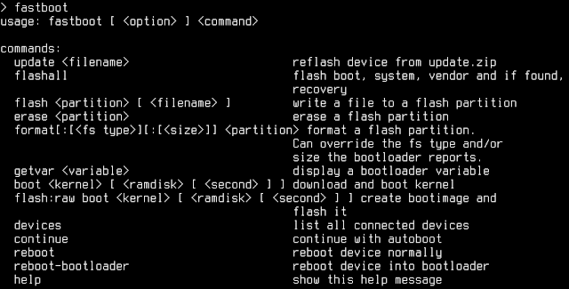
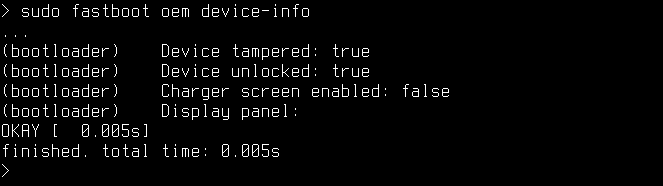
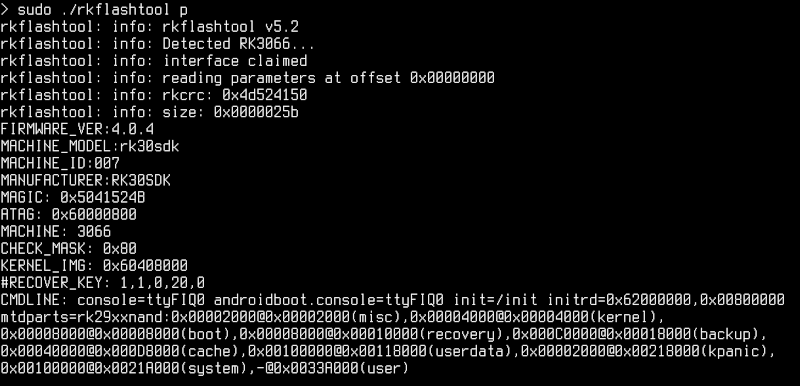
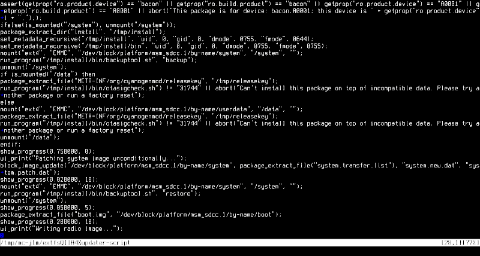
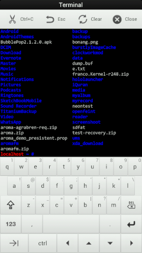
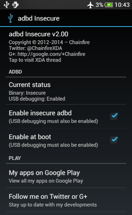

Тот, кто когда-либо прошивал свой смартфон или хотя бы разблокировал загрузчик, наверняка имел дело если не с инструментами командной строки, то хотя бы со специальными графическими приложениями для Windows, которые делают всю магию. Но как на самом деле происходит разблокировка загрузчика, установка новой прошивки или сброс до заводских настроек? Что скрыто, так сказать, под капотом?
Я расскажу, как это все работает изнутри, и поясню происходящее на примерах. Для простоты и лучшего понимания все повествование будет вестись в том же порядке, в котором компоненты получают управление на реальном устройстве: ROM -> загрузчик aboot -> ядро -> система Android. Плюс, конечно же, recovery, который может быть запущен загрузчиком вместо Android.
Если не брать в расчет небольшой код инициализации, располагающийся в ROM-памяти устройства и специфичный для каждого чипа, то загрузка Android начинается с aboot. Это стандартный загрузчик устройств на базе Android, разработкой которого занимается сама Google. Задача aboot — выполнить первичную инициализацию железа и передать управление либо коду, расположенному в разделе boot (это ядро Linux), либо, если юзер включил смартфон с зажатой клавишей увеличения (или уменьшения, где как) громкости, в recovery.
Ключевая особенность aboot в том, что это модульный загрузчик и к нему при сборке можно подключать разные сопрограммы, каждая из которых будет исполняться в отдельном потоке (что делает aboot миниатюрной ОС). Одна из таких сопрограмм — fastboot, реализация протокола и механизмов для записи разделов внутренней NAND-памяти. В среде энтузиастов fastboot обычно используется для установки кастомного recovery. Для этого достаточно включить смартфон с зажатыми клавишами управления громкостью (на большинстве смартфонов), затем с их же помощью выбрать в меню пункт Fastboot, подключить смартфон с помощью USB-кабеля к компу и выполнить такую команду (она входит в комплект Android SDK):
$ fastboot flash recovery образ-recovery.img
Причем recovery можно даже не прошивать, а запустить прямо с компа (эту функцию, кстати, использует инструмент CF-Auto-Root, но о нем позже):
$ fastboot boot образ-recovery.img

Справка по командам fastboot
Однако эти команды не сработают, если загрузчик залочен. Чтобы его разблокировать, на смартфонах линейки Nexus и OnePlus достаточно выполнить такую команду (все, что начинается с oem, — это команды, встроенные производителем смартфона):
$ fastboot oem unlock
Что делает эта команда? В нексусах она выполняет сброс до заводских настроек и записывает один бит в специальный раздел в памяти устройства, служащий индикатором разлочки для самого загрузчика. В Nexus 4 и 5 это раздел misc и адрес 16400, в других нексусах это может быть раздел param (Nexus 10) или даже aboot (Nexus 7/2013 и OnePlus One). Начиная с Nexus 6 и 9, Google навела в этом бардаке порядок и ввела понятие Persistent-раздела для хранения не зависящих от Android настроек. Имя этого раздела хранится в системной переменной ro.frp.pst, и его в любой момент можно получить с помощью такой команды (запускать на самом устройстве):
$ getprop ro.frp.pst
Как видно, все довольно просто, и, если говорить о нексусах, здесь «залоченный загрузчик» — это просто защита от дурака (собственно, как и должно быть в референсных смартфонах). Загрузчики в обычных смартфонах разработки Samsung, HTC, LG, Motorola и других серьезных контор защищены гораздо лучше, и с помощью команды oem unlock или записи бита по определенному адресу их не вскроешь. Сам бит записывается в недоступную пользователю память, а разблокировка возможна только с помощью цифрового ключа, полученного на сайте производителя (ну или взлома загрузчика, если это возможно).
И в нексусах, и в смартфонах других компаний при разблокировке загрузчика всегда устанавливается так называемый tamper-бит. Сервисные центры смотрят именно на него, решая, признать ли случай гарантийным: даже если впоследствии загрузчик был заблокирован, tamper-бит однозначно свидетельствует о факте разблокировки. Однако иногда этот бит можно сбросить. В нексусах все решается опять же простой записью бита по нужному адресу в нужный раздел, в других смартфонах это либо вообще невозможно сделать, либо приходится использовать специальные инструменты типа приложения Triangle Away (для Samsung’ов без KNOX).

Выясняем, установлен ли загрузчиком tamper-бит
Чтобы окончательно тебя запутать, скажу, что производители часто используют модульную архитектуру aboot для встраивания в него собственных средств прошивки и управления, работающих совместно с fastboot или даже вместо него. Наиболее яркий пример — это Odin в смартфонах Samsung. А некоторые производители идут еще дальше и вообще отказываются от aboot, заменяя его собственным или сторонним загрузчиком.
Например, в чипах Allwinner опенсорсный загрузчик uboot, который принято использовать в разного рода встраиваемых системах, например для роутеров. У MTK загрузчик собственного изготовления, разделенный на два компонента: preloader.bin, с которым работают фирменные утилиты прошивки SP Tools, и lk.bin, отвечающий за инициализацию оборудования. HTC использует загрузчик hboot, не так уж и сильно отличающийся от aboot. У Rockchip также свой собственный загрузчик, интересная особенность которого в том, что инфа о разметке NAND-памяти не вшита в него намертво, а находится в начале самой памяти. Благодаря этому изменить размеры разделов в устройствах на базе Rockchip проще простого.

Исследуем таблицу разделов планшета на базе Rockchip 3066
С загрузчиками закончим и перейдем к следующему компоненту загрузки.
Если во время включения устройства ты не зажимал клавишу увеличения громкости либо не перезагружал смартфон в режим recovery намеренно (например, с помощью расширенного меню перезагрузки в кастомных прошивках), на последнем этапе своей работы aboot загружает в память устройства ядро Linux и RAM-диск из раздела boot, а после этого передает управление ядру.
Сам раздел boot не содержит никакой файловой системы, а представляет собой сжатые с помощью gzip и записанные друг за другом ядро и RAM-диск, предваренные небольшим заголовком размером в два килобайта (он содержит опции загрузки ядра, а также адреса расположения образов и другую информацию). RAM-диск, в свою очередь, представляет собой небольшую виртуальную файловую систему, содержащую набор каталогов, к которым Android подключит файловые системы других разделов (system, data, sdcard), а также систему и скрипт инициализации и init.rc. RAM-диск загружается прямо в оперативку и продолжает существовать все время, пока смартфон включен.
Благодаря простой структуре образ раздела boot (boot.img) довольно легко распаковать. Это можно сделать даже с помощью HEX-редактора, но проще воспользоваться инструментом imgtool. Пример для Linux (x86_64):
$ imgtool.ELF64 boot.img extract
$ cd extracted
$ mkdir ramdisk_ext
$ cd ramdisk_ext
$ gunzip -c ../ramdisk | cpio -i
Запакованные ядро и RAM-диск окажутся в каталоге extracted, а содержимое RAM-диска — в подкаталоге ramdisk_ext. Это в идеале. На самом деле, как и в случае с загрузчиком, никакого стандарта для формата раздела boot нет, и производитель может проявить фантазию. Нередко ядро и RAM-диск располагаются на разных разделах. Такую конфигурацию можно найти в старых моделях Samsung и устройствах на базе Rockchip.
Тем не менее в 95% формат раздела boot стандартный, и если ты когда-либо прошивал на свой аппарат кастомное ядро, то наверняка внутри ZIP-архива с ядром был именно образ boot.img, так что вместе с ядром ты прошивал также и RAM-диск. Когда ты это делал, тебе приходилось быть осторожным, ведь RAM-диск стоковой прошивки отличается от RAM-диска того же CyanogenMod. Прошив ядро для AOSP в CyanogenMod, ты мог получить bootloop и много других неприятностей.
Чтобы обойти эту проблему, разработчик CyanogenMod и автор ClockworkMod Recovery Кушик Дутта (Koushik Dutta, или Koush) создал систему AnyKernel, которая позволяет устанавливать ядра отдельно от RAM-диска (путем пересборки раздела boot на лету). Сегодня ее используют многие разработчики кастомных ядер, но далеко не все. Так что перед прошивкой ядра рекомендую либо найти его версию для того кастома, который установлен у тебя, либо убедиться, что оно использует механизм AnyKernel.
Какое бы ядро ты ни выбрал, тебе в любом случае понадобится кастомный recovery для его установки.
Обнаружив зажатую клавишу увеличения громкости, aboot делает почти то же самое, что и при обычной загрузке, но использует вместо boot раздел recovery. Разделы идентичны по своему формату и зачастую включают в себя одно и то же ядро, однако содержимое RAM-диска существенно отличается. Если в случае с разделом boot назначение RAM-диска — создать начальные условия для дальнейшей загрузки системы, то recovery — это мини-ОС, способная работать обособленно.
Стоковый recovery очень прост. Все, что содержит его RAM-диск, — это исполняемый файл /sbin/recovery и (не всегда) набор фоновых изображений в каталоге /res или любом другом. При загрузке ядро Linux запускает /sbin/recovery, а тот выводит на экран простенькое меню, с помощью которого можно установить прошивку, подписанную цифровым ключом производителя, или произвести сброс до заводских настроек.
Кастомные recovery намного сложнее. Это уже не просто меню с фоновым рисунком, но целая операционная система, способная устанавливать какие угодно прошивки, делать бэкап, форматировать разделы и многое другое. Современные версии TWRP так и вообще поддерживают управление с помощью тач-интерфейса, сменные шкурки, полностью изменяющие внешний вид recovery, пароль для входа и эмулятор терминала вместе с экранной клавиатурой. Плюс ко всему кастомные recovery включают в себя BusyBox (набор утилит командной строки Linux) и сервер ADB, работающий с правами root. Так что режим recovery очень удобно использовать для отладки и таких операций, как, скажем, дамп разделов. Например, раздела boot (пример для чипов Qualcomm):
$ adb shell dd if=/dev/block/platform/msm_sdcc.1/by-name/boot of=/sdcard/boot.img
Но главная задача recovery — это, конечно же, установка прошивок. Точнее, она была бы главной задачей, если бы в recovery была такая функция. На самом деле все, что делает recovery, когда ты нажимаешь «Install ZIP...» и выбираешь прошивку, — распаковывает ZIP-файл (обычно в раздел cache) и запускает файл /META-INF/com/google/android/update-binary внутри него. Именно update-binary выполняет установку прошивки, руководствуясь инструкциями из файла updater-script (он лежит рядом).
Сами инструкции написаны на языке Edify, включающем в себя набор команд, которые могут понадобиться при установке: mount, unmount, package_extract_file, symlink, run_program и другие. Мы не будем обсуждать здесь все эти команды, они достаточно просты, и, чтобы ознакомиться с ними, достаточно распаковать любую прошивку и открыть updater-script в текстовом редакторе. Скажу лишь, что обычно такие файлы генерируются автоматически при сборке системы из исходников и только авторы узкоспециализированных прошивок (содержащих только ядро, например) пишут их самостоятельно.

Фрагмент updater-script из CyanogenMod 12.1
Recovery не накладывает никаких ограничений на файл update-binary — главное, чтобы его можно было запустить. Это дает производителям возможность использовать вместо него любое приложение, способное запуститься поверх ядра Linux. Совсем не обязательно, чтобы оно вообще выполняло установку прошивки. В рамках проекта Aroma Installer развивается вариант update-binary, который позволяет создателям кастомных прошивок реализовать графический инсталлятор с выбором тех или иных вариантов и опций установки.
Автор Aroma Installer также создал Aroma Filemanager — полноценный менеджер файлов со встроенным эмулятором терминала. Чтобы его запустить, необходимо перезагрузиться в recovery и «прошить» ZIP-файл. Естественно, никакая прошивка выполнена не будет, ведь update-binary внутри ZIP-файла — это только файловый менеджер, он не выполняет никаких операций установки.

Эмулятор терминала, встроенный в Aroma Filemanager
«Фиктивный» update-binary часто используется для распространения разного рода скриптов. Гораздо проще переименовать скрипт в update-binary, запаковать в ZIP-файл и попросить человека «прошить» его, чем объяснять, как запускать скрипты с помощью ADB. Именно так поступил osm0sis со своим скриптом разблокировки загрузчика аппаратов линейки Nexus. Если ты скачаешь его ZIP-файл и взглянешь внутрь, то найдешь updater-binary, внутри которого обычный sh-скрипт.
Ну и в конце пара слов о том, что такое root. Начнем со всем известных азов: в Linux root — это имя пользователя с безграничными правами в системе (типа администратора в Windows). Root может вообще все, вплоть до удаления всей системы с диска (именно это делает знаменитая команда "rm -rf /*), поэтому обычно никто не сидит, так сказать, под рутом, а использует непривилегированный аккаунт.
Чтобы иметь возможность выполнять операции с правами root (например, устанавливать софт или управлять сервисами), можно использовать разные приложения (команды), одна из которых носит имя su. Она позволяет получить права root или любого другого пользователя в системе, пароль которого тебе известен. И все благодаря специальному SUID-биту, который позволяет su работать с правами root, даже если оно было запущено обычным пользователем.
В Android с правами root работает исключительно сама система (и то далеко не вся), тогда как сервер ADB и приложения исполняются с правами непривилегированных пользователей (по одному пользователю Linux на каждое приложение, серьезно), а команды su нет вообще. Поэтому единственный способ получить права root в такой ситуации — воспользоваться уязвимостью в одном из системных компонентов, работающих с правами root. Таким образом можно не просто временно заполучить права root, но и использовать их, чтобы разместить в системе бинарник su (скопировать в /system/xbin, например) и поставить на него SETUID-бит. Именно так работают все наиболее популярные инструменты рутинга, от Super One Click до framaroot.
Второй вариант — прошить бинарник su с помощью кастомной консоли восстановления. Известный Android-разработчик Chainfire уже много лет занимается разработкой и поддержкой инструмента для управления root-доступом SuperSU, а также ZIP-архива, прошив который, ты получишь рутованный смартфон (при установке он копирует в систему su и приложение SuperSU.apk). Кстати, инструменты типа Framaroot вместе с бинарником su также устанавливают SuperSU или его аналог SuperUser, чтобы пользователь мог управлять тем, каким приложениям следует давать права root, а каким нет.
SU собственной персоной
Есть у Chainfire и другой интересный проект — CF-Auto-Root. Он тоже устанавливает в систему su и SuperSU, но делает это весьма оригинальным способом: без задействования recovery. Инструмент CF-Auto-Root существует в двух вариантах, для Odin и для fastboot, причем в последнем случае он представляет собой модифицированную версию recovery, которую не надо прошивать. Ее следует запускать с помощью описанной в начале статьи команды fastboot boot. Пример для Nexus 4:
$ fastboot boot CF-Auto-Root-mako-occam-nexus4.img
При загрузке «поддельный recovery» запускает не /sbin/recovery, а бинарник /sbin/cfautoroot, который просто копирует в систему su и SuperSU и затем перезагружает устройство. Зачем использовать такой извращенный способ, когда можно установить кастомный recovery и прошить стандартный SuperSU.zip? Ну например, это пригодится тем, кто не хочет по каким-то причинам устанавливать кастомный recovery.
Последнее, о чем хотелось бы сказать, — разные виды root. В Android root-доступ принято разделять на «пользовательский» и «root уровня ядра» (kernel root). Это довольно глупые определения, но нам придется иметь с ними дело. «Пользовательский root» — это то, что я описал выше: приложение запрашивает права root с помощью запуска /system/xbin/su, а SuperSU показывает тебе окошко с запросом прав root. Все просто. Так называемый «root уровня ядра» — это когда с правами root работает сервер ADB. Рутом уровня ядра он называется по причине необходимости править boot.img, а точнее содержащийся в нем init.rc (необходимо присвоить переменной property:service.adb.root значение 1 и запустить adbd с флагом --root_seclabel=u:r:su:s0).
Подавляющему большинству пользователей root уровня ядра никогда не понадобится. Однако его могут использовать некоторые скрипты и графические инструменты, работающие со смартфоном по ADB (яркий пример: PatchROM от MIUI). В CyanogenMod и многих других кастомных прошивках по умолчанию доступны все виды root (их можно выбрать в «Настройках для разработчиков»). Для получения root уровня ядра в других прошивках можно использовать приложение adbd Insecure за авторством все того же Chainfire.

Adbd Insecure и стоковая прошивка HTC
Надеюсь, эта статья помогла тебе разобраться в том, как работают механизмы разблокировки, прошивки и восстановления Android. В целом в этом нет ничего сложного, и, поняв, как именно все это работает, ты избежишь многих проблем, связанных с разблокировкой и перепрошивкой устройства. И даже если они возникнут — теперь ты сможешь их решить без посторонней помощи.